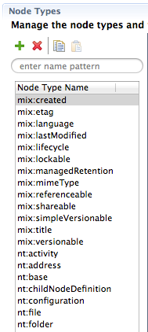

| ModeShape Tools - CND Editor |
The Node Types Table is used to add new and modify existing CND node type definitions. Selecting a node type populates the details section, the property definitions section, and the child node definitions section of the CND Editor. In each of those sections, editors are provided to facility making changes.
Here is what the Node Types Table looks like:
The table's toolbar contains buttons and a search field that do the following:
| Name Search Field | filters the node types shown in the table by only including those whose names contains the entered text (if empty then all are shown) |
| Add Node Type | opens a dialog that allows a namespace prefix and JCR name to be associated with the new node type definition |
| Delete Node Type | deletes the selected node type definition from the CND |
| Copy Node Type | copies the selected node type definition to the system clipboard |
| Paste Node Type | pastes into the CND a node type definition from the system clipboard |